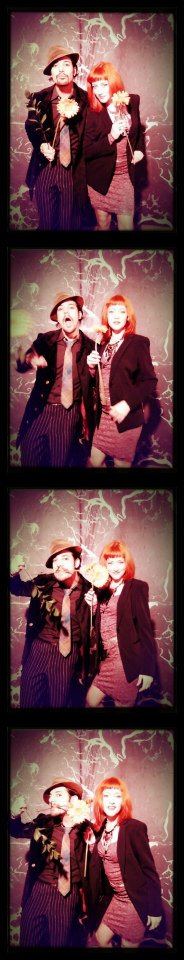
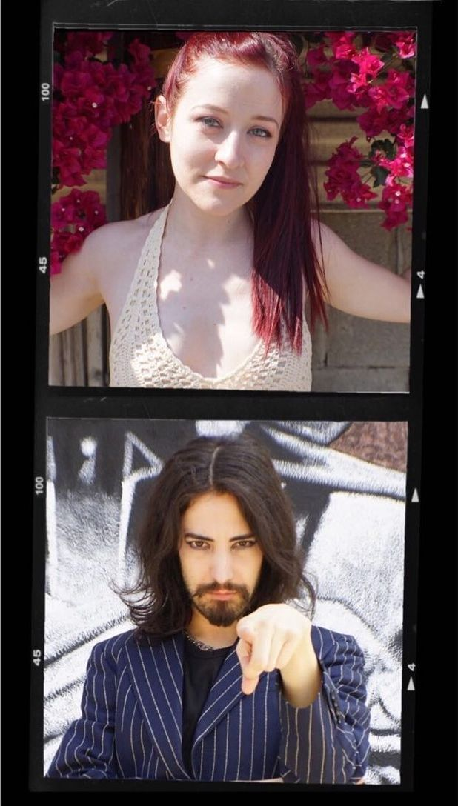

Take The Band Famous with you everywhere you go!


Not your average American rock band.
A genre-bending band and enterprise, producing all of their music, music videos, writing all of their own music, and also cultivating an inspiring movement they nicknamed “Party for a Purpose” for all of the benefit events they have hosted, produced, and performed to date, including two festivals, with all past, present, and future performances live streamed on the internet via The Band Famous apps, twitch, and more streaming platforms to extend their virtual audience worldwide.
The singer, a native of WI, and an artist of MN formed a band in a spontaneous moment and thus The Band Famous was born. (July 28th, 2013). The Band Famous is the first band to have formed over an improvised livestream and also to self-develop, self-produce, and self-distribute their debut album in the form of an interactive app for smartphones, self-titled "The Band Famous". While Björk's app, Biophilia came prior, it also was developed by a team of over 250 people including scientists, programmeers, musicians, artists, and designers. The Band Famous is your friendly DIY self-made American genre-bending band.
After their debut app album release concert at Gay 90s, a historic venue in downtown Minneapolis, (June 13, 2014) that they produced, they moved to Manhattan spending a year (Sept. 2014 - Sept. 2015) developing their music and recording tracks such as “Because” and “11NINE” and active participation in multiple art shows and events, as well as live streaming performances through their apps in Union Square Park. They were on television in Connecticut, on multiple podcasts and radio interviews including Minnesota Public Radio and 89.3FM The Current - The Local Show, as well as WeekOnLatinoAmerica. “Because” was featured on 6 Towns Radio broadcasting to Newcastle, Stoke-on-Trent, and Kidsgrove in the United Kingdom.
After Manhattan they were briefly in WI before spending six years in Los Angeles. While in Los Angeles, some highlights for the band include being featured as a food critic on CCTV in China, and being invited to attend the ESPYs for 2019. They also hosted an event for eSports PoGoKieng with Pokémon GO and attended the Montebello, CA tournament, as featured in a documentary the band is currently working on.
Three of those years in Los Angeles were spent running a live/work space which included a studio that they built, a stage and full PA sound system that they shared with artists they feature in The Band Famous Hall Of Fame music collective, sharing proceeds with various charities spanning multiple events, and even benefit music festivals. Their first benefit music fest, “Live + Follow Your Dreams”, featured the world’s first-ever ranked Pokémon Go tournament for charity, as well as live stand-up comedy, body painting by Zander paired with live music and DJs for a two-night festival. Following this festival, the band collaborated on an article on Esports with Pokémon GO Hub’s Avrip who at one time was the #1 Sivir player in League of Legends in the world, and who has written more than 40 articles on pokemongohub.net
The band connected with Tom Green in Los Angeles and he shared support for the band’s self-produced music video for their self-produced release "Emotional Scatter", which was premiered by City Pages music, and - featuring a signed gnome toy by the comedian - was retweeted and quoted by pop icon Tom Green, who has described their music as "an exciting - would you call it an industrial metal band? What is it more of a pop, pop industrial alternative band?"
The Band Famous benefit music fest, which combines Pokémon Go, stand-up comedy, body painting, live music and DJs, will continue - now on our 41 acres in Arizona! Free entry will be granted to The Band Famous mailing list subscribers, and this time “Live + Follow Your Dreams” will be benefiting singers, performers, and musicians with cryptocurrency payments, and the festival will be cryptocurrency-driven, with discounts on merch for cryptocurrency payments at the festival.
